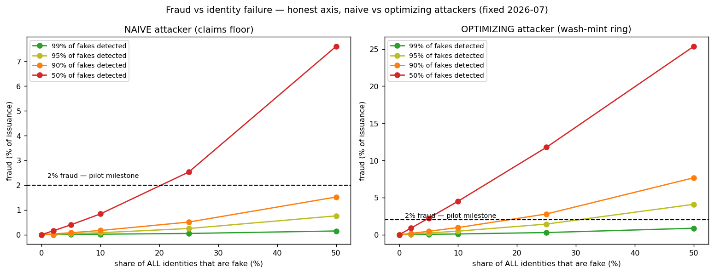

In plain language
Companion to RESULTS - Adversarial Stress Test. Companion added July 11, 2026 — the v1–v5-era runs predate the plain-language convention; written from the committed RESULTS as it stands today (including any verification-pass corrections already applied in that file), with no reinterpretation.
The question
Every earlier run assumed everyone behaves honestly. This one adds strategic attackers to the v3 engine and asks the question crypto reviewers ask first: can EDEN be gamed — by self-dealing, by armies of fake identities, by whatever a rational adversary would actually do?
What we found — after a correction
This file was revised after the July 2026 verification, and the corrected numbers are less flattering than the originals. Three fixes (old code and JSON archived as *_PRE-FIX_archive.*): the sweep axis was mislabeled in a way that flattered every row (the true detection bar at 50% fake identities is ~87%, not the 74% first reported); a too-kind linear extrapolation was deleted and the saturation case actually run; and attackers were allowed to optimize. The corrected picture: at 50% fake identities and zero detection, naive attackers capture 15.2% of issuance — but optimizing attackers capture 35.7%, with a single undetected fake able to net 5.78× the floor by wash-minting fresh AI content at the taper cap.
The genuinely good news survives the correction: the floor itself never breaks. The 10th percentile stays at or above 1.17× essentials and the pool never needs top-up minting, even at 50% fakes with zero detection (wash minting feeds the pool too). The damage lands instead on honest creators — real income 0.76× at saturation, through governor dilution — and on the integrity of issuance itself.
The honest catch
Keeping fraud under the 2%-of-minting pilot milestone against optimizing adversaries requires high-quality identity and liveness enforcement — roughly 79%, 93%, and 98% detection at 10%, 25%, and 50% fake shares — not the modest bars the original table implied. That defense (the v1.2 liveness-gated minting event) still has to earn those rates in a pilot; it is not solved. Sharper still: for the money, identity failure degrades things gracefully, but for one-person-one-vote governance, fake identities are fake votes, and that layer could be captured outright — a different and stricter requirement than the economics impose. Detection here is a dial, not a built detector; oracle manipulation and collusion rings were treated analytically; governance capture by sybils is named as the dominant risk but not yet quantified.
One line
After an honest correction that raised the bar, the verdict is: EDEN's floor survives even massive identity fraud — the poor stay protected and no money gets printed — but optimizing attackers can siphon up to 35.7% of issuance and dilute honest creators unless identity checks catch roughly 80–98% of fakes, and the one-person-one-vote governance layer is where identity failure would be fatal.
Words used here (added July 18, 2026 — plain-language house rule; the text above is unchanged). Sybil — one person pretending to be many accounts; the "armies of fake identities" tested here. Wash-minting — engaging with your own (or your bots') content so that fake attention creates real new money — the minting cousin of wash trading. Taper cap — the daily fade-out that limits how much any one identity's engagement can mint per day. Liveness — proving a real, live human is present right now — not a photo, a recording, or a bot. Issuance — all newly created money; 35.7% is the share optimizing attackers could siphon. Top-up minting — printing extra money to cover the floor when its funding slice falls short; it never triggered, even at 50% fakes. 10th percentile — the person poorer than 90% of people; at 1.17× essentials they stay above water throughout. Governor dilution — the automatic mint-rate limiter (the governor) holds total money creation steady, so what fakes capture comes out of honest creators' share — like printing extra shares of a company. Oracle — the system's price-measuring instrument; manipulating it means lying to the thermometer the economy reads. Saturation — the maxed-out worst case, here 50% of all identities fake. Capture — an attacker gaining control of a mechanism from inside its own rules — here, seizing one-person-one-vote governance with fake voters.
Figures

Technical results
Closes the biggest blind spot in v1–v3: those runs assumed everyone behaves honestly. This run reuses the v3 engine and adds strategic attackers to ask the question crypto reviewers ask first — can it be gamed? Files in this folder.
⚠️ REVISED — honest axis + optimizing attackers after the July 2026 verification
Three fixes (old code/JSON archived as *_PRE-FIX_archive.*): (1) the sweep axis is now genuinely share of all identities that are fake (the old sybil_rate multiplied honest participants but was labeled a share — flattering every row; the true 50%-fake detection bar is ~87%, not 74%); (2) the "worst case ~15% of issuance" linear extrapolation is deleted — saturation is now run: at 50% fake identities and zero detection, naive attackers reach 15.2% of issuance but optimizing attackers reach 35.7%; (3) attackers can now optimize: an undetected sybil wash-minting fresh AI content at the taper cap nets 5.78x the floor (the model's own bound), and the full wash mint enters the money supply, routing, and governor feedback.
Corrected findings: the floor itself never breaks — p10 stays >= 1.17 and the pool never needs top-up minting even at 50% fakes / zero detection (wash minting feeds the pool too). The damage lands on honest creators (real income 0.76x at saturation, via governor dilution) and on issuance integrity. Detection needed to keep fraud < 2% of minting: naive attackers — 0%/61%/87% at 10/25/50% fake share; optimizing attackers — 79%/93%/98%. The honest claim is therefore: the economics fail gracefully (the poor are protected structurally), but the 2% fraud milestone against optimizing adversaries requires high-quality identity/liveness enforcement (~80-98% detection), not the modest bars the original table implied. The v1.2 liveness-gated minting event (§2a) is the defense that has to earn those detection rates — a pilot question, not a solved one.
Numbers in the prose below predate the fix and are superseded by this section.
The one-paragraph answer
EDEN's economics degrade gracefully under attack, but its governance does not — and that distinction sharpens the project's "identity is the hard problem" claim. The economic defenses (effort-weighting, repeat-decay, the daily taper, one-device-at-a-time) make gaming the mint economically pointless: sustained self-dealing earns about 0.29× what you'd get just by claiming the floor honestly. The remaining attack is sybil floor-farming — fake identities each claiming the floor — and because the floor pays only about one essentials basket per identity, total fraud stays bounded in the low single digits of issuance even with weak identity verification, never forces money-printing, and barely touches honest incomes. The place identity failure is genuinely catastrophic is not the money — it's the one-person-one-vote governance layer, which fake identities could capture outright.
1. Gaming the mint (wash-consumption / self-dealing) is bounded — the defenses work
Can an attacker mint EVE by consuming their own content? Per identity, per month (model units):
| EVE / month | vs. the floor | |
|---|---|---|
| Honest floor income | 1.77 | 1.00× |
| Burst self-minting (fresh catalog, repeat-decay not yet biting) | 10.22 | 5.78× |
| Sustained self-minting (re-consuming a finite catalog) | 0.51 | 0.29× |
A burst of wash-farming on fresh content can briefly out-earn the floor (~5.8×). But the repeat-decay (×0.5 per repeat, floored at 0.05) drives sustained self-dealing down to 0.29× the floor — less than you'd earn by just doing the floor's verified work honestly. The daily taper caps any single identity at ~11 effective hours, and one-device-at-a-time stops parallelism. Net: there is no profitable, sustainable way to game the mint from a single identity. The only way to scale is to control more identities — which moves the whole problem to the identity layer.
This is also the first quantified evidence that the effort-weight and repeat-decay (added back in v1/v2) are doing real anti-gaming work, not just shaping distribution.
2. Sybil floor-farming — the dominant sustainable attack — is cost-bounded
Because the only way to scale is more identities, the real attack is fake identities each claiming the earnability floor. Sweeping the identity-failure rate (share of identities that are fake) against the detection rate (share of fakes caught):
| Identity-failure rate | 99% detected | 95% detected | 90% detected | 50% detected |
|---|---|---|---|---|
| 5% fake | 0.01% | 0.04% | 0.08% | 0.38% |
| 10% fake | 0.02% | 0.08% | 0.15% | 0.76% |
| 25% fake | 0.04% | 0.19% | 0.38% | 1.9% |
| 50% fake | 0.08% | 0.38% | 0.76% | 3.8% |
(fraud as % of issuance)
Three things stand out, and all are reassuring:
- Fraud is bounded even in the worst case. If every identity were fake and none were caught, floor-fraud would peak at ~15% of issuance — not 100% — because the floor pays only ~one essentials basket per identity, which is small next to total issuance. Sybils can't drain what the floor doesn't pay.
- Self-funding never breaks. Top-up minting stayed at 0.0% in every run — sybil floor claims fit inside the 10% verification pool, so fraud never forces inflationary money-printing. Honest participants' p10 stayed at 1.18× essentials throughout; median creator real income barely moved (1.26 → 1.21 in the worst case).
- The economics degrade gracefully. Fraud scales linearly as
identity-failure × (1 − detection) × 15.2%. With strong identity (99% detection) fraud is negligible at any plausible sybil rate; even weak identity (50% detection) only reaches the 2% pilot milestone at ~25% fake identities.
3. The detection frontier (hitting the <2%-of-minting pilot milestone)
| Sybil pressure | Detection needed to keep fraud < 2% |
|---|---|
| 10% of identities fake | none (stays < 2% even with zero detection) |
| 25% of identities fake | ≥ 47% of fakes caught |
| 50% of identities fake | ≥ 74% of fakes caught |
These are achievable detection bars — far below the near-perfect personhood proof one might fear is required. The economic milestone is reachable with imperfect, attestation-based identity plus anomaly detection.
4. What this refines about "identity is the hard problem"
The white paper (rightly) flags proof-of-unique-personhood as the central unsolved problem. This run sharpens why and where:
- For the money, identity failure is survivable. Per-identity caps (the floor amount, repeat-decay, the taper) keep fraud in the low single digits and never break monetary stability. EDEN's economy is more sybil-tolerant than expected.
- For governance, identity failure is fatal. The constitutional layer is one-person-one-vote; fake identities are fake votes. A 25% sybil rate that costs the economy ~1–2% of issuance could, unchecked, capture the franchise outright. This is where identity integrity is non-negotiable — and it's a different, sharper requirement than the economics impose.
So the honest framing for reviewers: the economic mechanism is robust to imperfect identity; the governance mechanism is not. Bond floor claims and invest the hardest identity guarantees in the voting layer.
5. Incentive-compatibility (the mechanism-design read)
- Self-dealing is not incentive-compatible for the attacker: sustained self-mint (0.29× floor) < honest floor income, so a rational actor prefers honest participation. Guaranteed by repeat-decay × effort-weight × taper.
- Sybil floor-farming is profitable per fake but cost-bounded in aggregate: payoff per fake = one floor basket; system-wide fraud = (undetected fakes) × (floor share). Push it toward zero with (a) identity integrity/detection, (b) stake-and-slash bonds on floor claims so a caught fake forfeits more than it gained, (c) friction/cost to mint a new identity.
- Collusion rings reduce to the sybil problem: a ring of distinct identities consuming each other's assets evades the same-user repeat-decay — but it still needs many identities and is still capped per identity by the taper, so it collapses back to "how many identities can an attacker control," i.e., the identity layer again.
Honest limits of this model
Detection is treated as an exogenous parameter — building the actual detector (the ML/crypto personhood-and-anomaly problem) is the hard real-world work this can't do. The wash-farming bound assumes the taper and repeat-decay are faithfully enforced, which itself depends on honest engagement measurement (TEE attestation). Oracle manipulation and full collusion-ring dynamics are treated analytically rather than simulated. And governance capture by sybils is identified here as the dominant risk but not yet quantified — that deserves its own model. As always: same structural caveats as v1–v3, run at N=25,000.
Files
adversarial_sim.py— the engine + sybil sweep and wash-farming boundfig_adversarial_fraud.png— fraud vs identity-failure rate, by detection levelresults_adversarial.json— all rows, the wash bound, and the detection frontier
Raw data
⬇ results_adversarial.json⬇ results_adversarial_PRE-FIX_archive.json